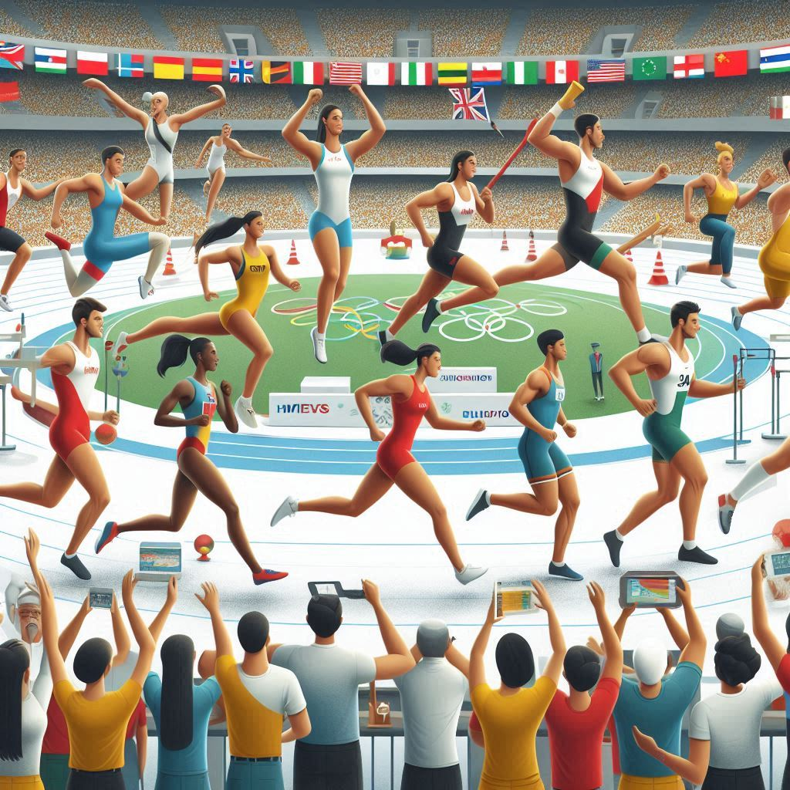

Origen y Evolución de los Juegos Olímpicos
Los Juegos Olímpicos nacieron en la antigua Grecia, en la ciudad de Olimpia, hace más de dos mil años.
Leer másEl Origen de Arrodillarse para Pedir Matrimonio
La tradición de arrodillarse para pedir matrimonio es un gesto romántico y significativo que ha sido practicado durante siglos en muchas culturas occidentales. Aunque no se sabe exactamente cuándo o dónde se originó esta costumbre, su simbolismo y significado han sido interpretados de diversas maneras a lo largo de la historia. Este documento explora los posibles orígenes y las razones detrás de este acto simbólico
Leer más